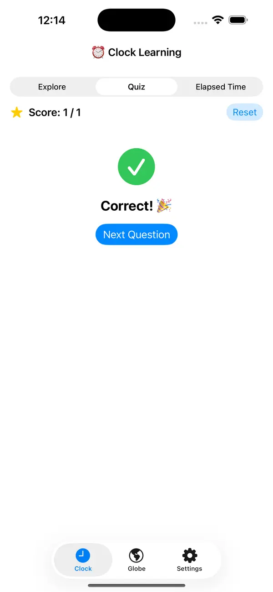
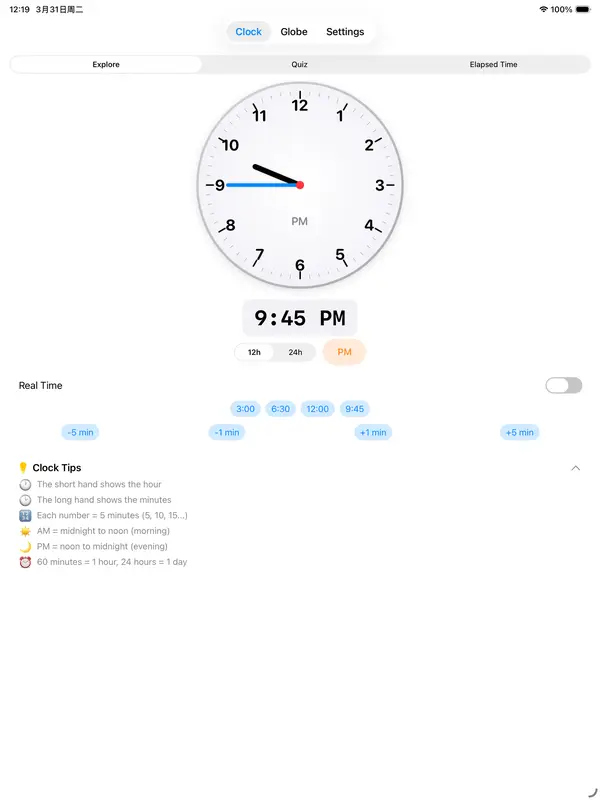
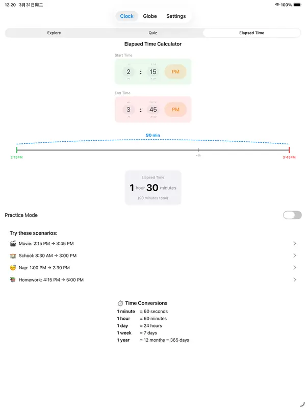
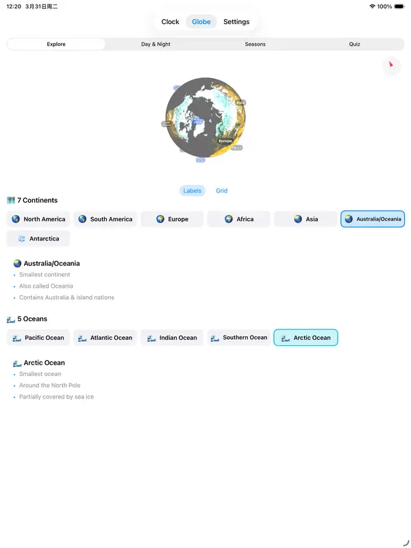

Tell time. Explore the world. All in one interactive experience.
Tick Tock Earth brings together two hands-on learning modules: a fully interactive analog/digital clock and a stunning 3D globe powered by NASA imagery — complete with day/night simulation, seasonal orbits, and quizzes.
App Preview
iPhone




iPad






Two modules, one app
Each module is self-contained and packed with interactive tools, visual aids, and quiz modes.
🕐 Interactive Analog Clock
Drag the hour and minute hands to set any time. The synchronized digital display updates instantly. Understand AM/PM and how the hands relate to numbers on the dial.
⏱ Elapsed Time Calculator
Set a start and end time, then instantly see the elapsed duration. A practical tool for understanding time intervals and differences.
🌍 3D Globe with NASA Textures
Rotate a vivid, high-resolution 3D Earth. Tap any continent or ocean to fly there and read quick facts. Toggle latitude/longitude grid and labeled overlays.
🌗 Day & Night Simulation
A teaching-style globe locked at Earth's 23.5° axial tilt with a visible axis pole. Toggle sunlight to see how rotation creates day and night — just like a classroom model.
🌞 Seasons & Orbital Diagram
An animated orbital view shows Earth's position around the Sun for each month. Northern and Southern hemisphere seasons are displayed side by side.
📝 Built-in Quizzes
Clock quiz: read or set a clock. Geography quiz: continents, oceans, rotation, revolution, landmarks, and fun facts. Score tracking included.
How it works
Two modules accessible from the home screen — tap and explore.
Clock Explorer
Learn tab: Drag clock hands interactively. Step-by-step guides explain hours, minutes, and AM/PM.
Elapsed tab: Calculate the time between two clock settings.
Quiz tab: "Read the Clock" or "Set the Clock" — select your answer and tap Check Answer.
Globe Explorer
Explore tab: Spin the 3D globe freely. Tap continent/ocean cards to fly to each location and read facts.
Day & Night tab: Adjust rotation speed and toggle sunlight. Pinch to zoom, double-tap to reset.
Seasons tab: Pick any month to see Earth's orbital position and hemisphere seasons.
Offline & Private
Everything runs on-device. No account, no ads, no data collection. Works without an internet connection — perfect for classrooms, travel, or anywhere.
FAQ
Does the app require an internet connection?
No. All features — clock, globe, quizzes — work fully offline.
Does the app collect any data?
No. Zero data collection. See our Privacy Policy.
Does it work on iPad?
Yes. Tick Tock Earth is a universal app optimized for both iPhone and iPad.
How do I reset the quiz score?
Tap the "Reset" button next to the score display at the top of any quiz tab.
How do I contact support?
Email wangning.engineer@outlook.com. Typical response time is 24–48 hours.
Get the app
Tick Tock Earth is on the App Store for iPhone and iPad.